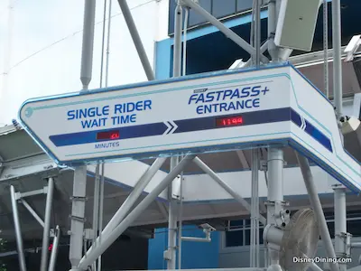

Saltare le file a Walt Disney World? Tutti i trucchi utili.
By Valentina
12 Luglio 2021
Aspettando news su Fastpass e dintorni, ho pensato possa essere utile ribadire le 5 Regole d'Oro per passare meno tempo possibile in fila durante la tua visita a Walt Disney World.
1 - Il Rope-Drop
Questa parola non ti dovrebbe suonare nuova, ne ho parlato diverse volte sul podcast, ma faccio un riassunto velocissimo per i più distratti: rope drop è il nome con cui Disney chiama il fatto di aprire i parchi prima dell’orario ufficiale, in modo da permettere agli ospiti di raggiungere determinate aree del parco e aspettare l’apertura delle attrazioni, praticamente assicurandosi zero attesa. Il rope-drop è un utilissimo strumento per attrazioni molto popolari, come ad esempio Flight Of Passage a Pandora (Animal Kingdom) o Slinky Dog Dash a Toy Story Land (Hollywood Studios), Big Thunder Mountain o Seven Dwarves Mine Train a Magic Kingdom o Frozen Ever After (e presto Ratatouille) ad EPCOT. Se siete mattinieri e avete già deciso quale attrazione volete assolutamente visitare durante la vostra visita in un parco di Walt Disney World, ricordatevi del rope-drop.
2 - Tieni d’occhio l’app
La seconda regola è monitorare di continuo l’app ufficiale di Walt Disney World: My Disney Experience. I tempi di attesa fluttuano tantissimo durante il giorno e se per i rides più gettonati, potrete prevedere file lunghe praticamente tutto il giorno, potreste rimanere sorpresi dal trovare file più corte per altre attrazioni in certi momenti della giornata. Tra l’altro, in Florida la pioggia e le attrazioni che per forza chiudono durante i temporali che sono all’ordine del giorno, influisce tantissimo sulle file, e non è strano vedere tempi di attesa cambiare drasticamente a seconda del meteo, quindi occhio all’app.
3 - Rimani fino alla chiusura del parco
Terza regola d’oro è rimanere fino a tardi nei parchi. Disney ha infatti una regola che pochi conoscono: si ha tempo fino alla chiusura vera e propria del parco per mettersi in fila per un’attrazione, e, se si è in fila in quel momento, non si puù essere invitati ad uscire. Faccio un esempio: se Magic Kingdom chiude alle 22, ma voi vi mettete in fila per Splash Mountain alle 21:40 e ci sono 40 minuti di fila, alle 22 non vi sarà chiesto di uscire, ma continuerete la fila fino alle 22:20, farete l’attrazione, e poi lascerete il parco quando buona parte degli altri ospiti saranno già andati via. Salvo eccezioni, questa regola è sempre valida e dato che come ho detto molte persone non la conoscono, le file tendono anche ad essere un po’ più corte verso la fine della giornata, in quanto molti ospiti pensano di non aver più tempo per determinate attrazioni. Quindi occhio ai tempi - non vi sarà permesso iniziare la fila alle 22 in punto, ma è sicuramente un buon trucco per risparmiare un po’ di tempo.
4 - Salta gli spettacoli
Quarta regola d’oro per saltare le attrazioni è mettersi in fila poco prima o durante gli spettacoli serali. Il momento della giornata con le file più corte infatti é spesso durante i fuochi d’artificio, specialmente a Magic Kingdom ed EPCOT. Chiaramente questo vi costerá il sacrificio di saltare i fuochi d’artificio, ma se visitate un parco per più giorni o semplicemente avete un’attrazione a cui assolutamente non volete rinunciare, sappiate che questa può essere una buona tattica per trovare file più corte.
5 - Tieni d’occhio il Single Rider

Immagine di disneydining.com
Quinta ed ultima regola per questa lista è tenere d’occhio la fila per Single Rider. Molte attrazioni, soprattutto le più popolari, offrono la possibilitá di mettersi in fila come “tappabuchi”, ovvero come persone singole che verranno unite ad altri nuclei di ospiti per coprire tutti i posti disponibili. Il Single Rider è una buona idea anche se viaggiate in gruppo ma non vi interessa particolarmente salire su un’attrazione con i vostri amici: se tutto il vostro gruppo accederà dalla fila single rider, probabilmente verrete divisi, ma sicuramente risparmierete minuti preziosi saltando un po’ di fila. Cercate la fila Single Rider all'ingresso delle attrazioni principali: di solito è di fianco a quella per il Fastpass+.
Spero che questa lista ti sia utile durante la tua prossima vacanza per risparmiare un po’ di tempo prezioso ed avere più tempo per esplorare i parchi Disney!